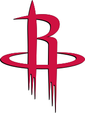

Huston Rockets

Houston Rockets so ameriška profesionalna košarkarska ekipa s sedežem v Houstonu. Rockets tekmujejo v Nacionalni košarkarski zvezi (NBA) kot članska ekipa zahodne konference jugozahodne divizije lige. Ekipa igra svoje domače tekme v Toyota Centru, ki se nahaja v središču Houstona. V svoji zgodovini je Houston osvojil dva naslova prvaka lige NBA in štiri naslove zahodne konference. Ustanovljena je bila leta 1967 kot San Diego Rockets, razširitvena ekipa s prvotnim sedežem v San Diegu. Leta 1971 so se Rocketsi preselili v Houston. Rockets so v svoji prvi sezoni kot franšiza leta 1967 zmagali le na 15 tekmah. Na naboru lige NBA leta 1968 so Rocketsi dobili prvega skupnega izbora in izbranega močnega napadalca Elvina Hayesa, ki je popeljal ekipo do prvega nastopa v končnici v njegovem novincu sezona. Rocketsi skoraj desetletje niso zaključili sezone z zmagovitim rekordom, vse do sezone 1976–77, ko so zamenjali za All-Star centra Mosesa Malona. Malone je med igranjem za Rockets dvakrat osvojil nagrado za najkoristnejšega igralca (MVP) lige NBA in v svojem prvem letu z ekipo popeljal Houston do finala vzhodne konference. V sezoni 1980–81 so Rocketsi končali redno sezono z rezultatom 40–42, vendar so vseeno prišli do končnice. Pod vodstvom Malona so Rockets leta 1981 dosegli svoj prvi finale lige NBA in tako postali šele druga ekipa v zgodovini lige NBA, ki ji je to uspelo z rekordom porazov. Izgubili bi v šestih tekmah proti Boston Celticsom z 62–20, ki so jih vodili Larry Bird, Robert Parish in bodoči glavni trener Rockets Kevin McHale. Od leta 2021 so Rockets v letih 1980–1981 zadnja ekipa po Minneapolis Lakersih v letih 1954–55, ki se je prebila vse do finala lige NBA s porazom.
Trenutna ekipa

Po prekinitvi sezone NBA 2019–20 so bili Rocketsi ena od 22 ekip, ki so bile povabljene v NBA Bubble za sodelovanje na zadnjih osmih tekmah redne sezone. Potem ko so Rocketse v končnici izločili Los Angeles Lakers, sta D'Antoni in Morey obvestila Rocketse, da se ne bosta vrnila v ekipo v sezoni 2020–21. Med izven sezone je bil Westbrook decembra 2020 zamenjan za Washington Wizards. Rafael Stone je bil zaposlen kot generalni direktor, potem ko je služil kot generalni svetovalec in kot pomočnik generalnega direktorja. [193] Stephen Silas je bil zaposlen kot glavni trener Rocketsov. Januarja 2021 je bil Harden zamenjan za Brooklyn Nets v menjavi štirih ekip. Rockets so sezono začeli z 11–10 na začetku, končali pa z rekordom 17–55, najslabši v ligi kljub številnim poškodbam in zamenjavam. Na naboru lige NBA leta 2021 je ekipa izbrala Jalena Greena z drugim izborom lige NBA G League Ignite, ki ga je povezala s Kevinom Porterjem Jr., ki je bil pridobljen prek menjave sezono pred tem za 55 najboljših zaščitenih izbir v drugem krogu. Zaradi njihovih dodatkov na naboru, vključno z izboroma v prvem krogu Alperena Şengüna in Josha Christopherja, se je ekipa začela osredotočati na razvoj in obnovo okoli svojega mladega jedra, zaradi česar je bil John Wall na klopi za celotno sezono. V sezoni 2021–2022 so bili Rockets ponovno na zadnjem mestu lige z izidom 20–62. Jalen Green je bil izbran v prvo ekipo novincev lige NBA s povprečjem 17,3 točke, 3,4 skoka in 2,6 podaje. Na naboru lige NBA leta 2022 so Rockets izbrali Jabarija Smitha Jr. na tretjem in Tarija Easona na 17. mestu. Poleg tega so 29. pridobili pravice do osnutka TyTy Washington.